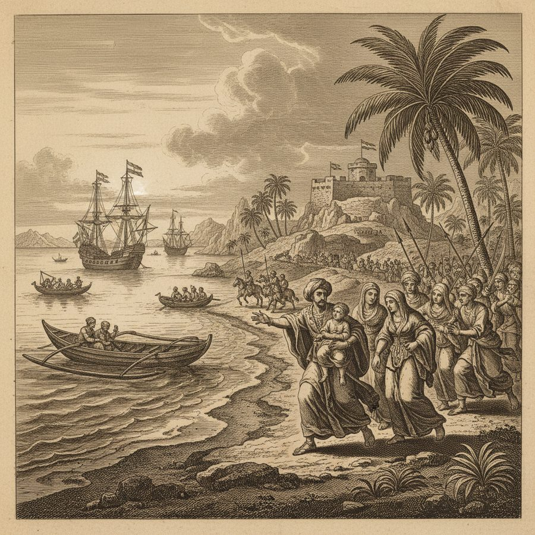
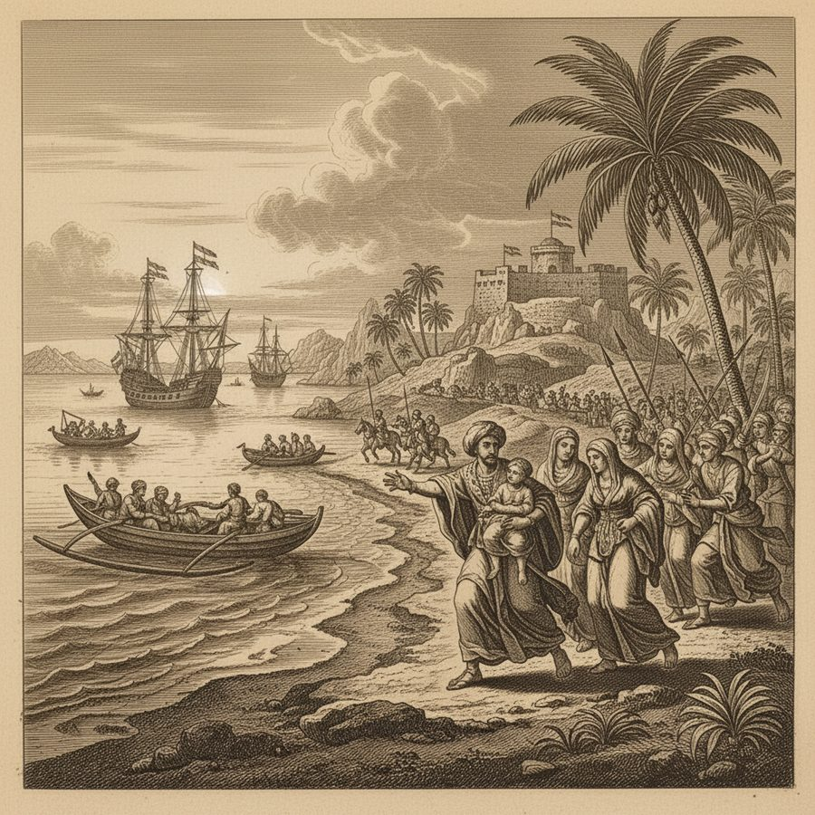
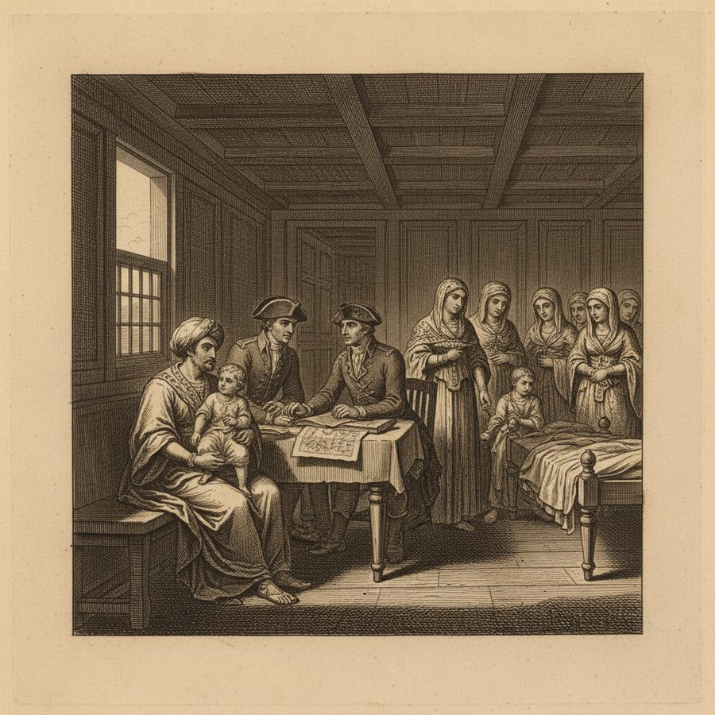
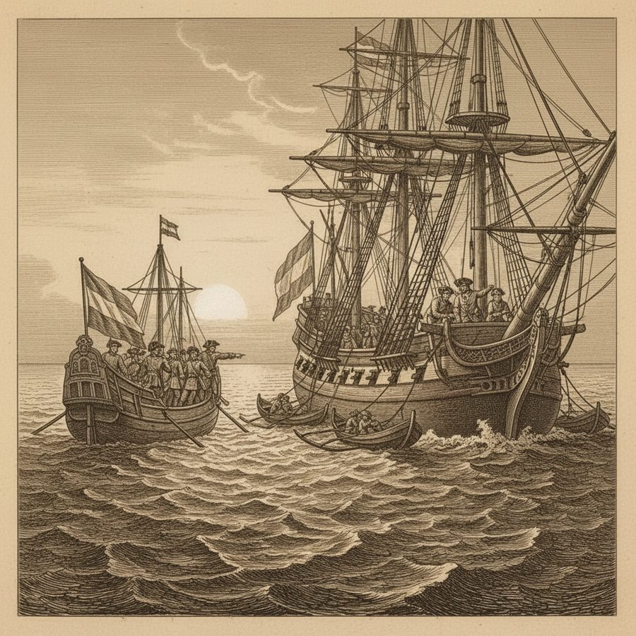
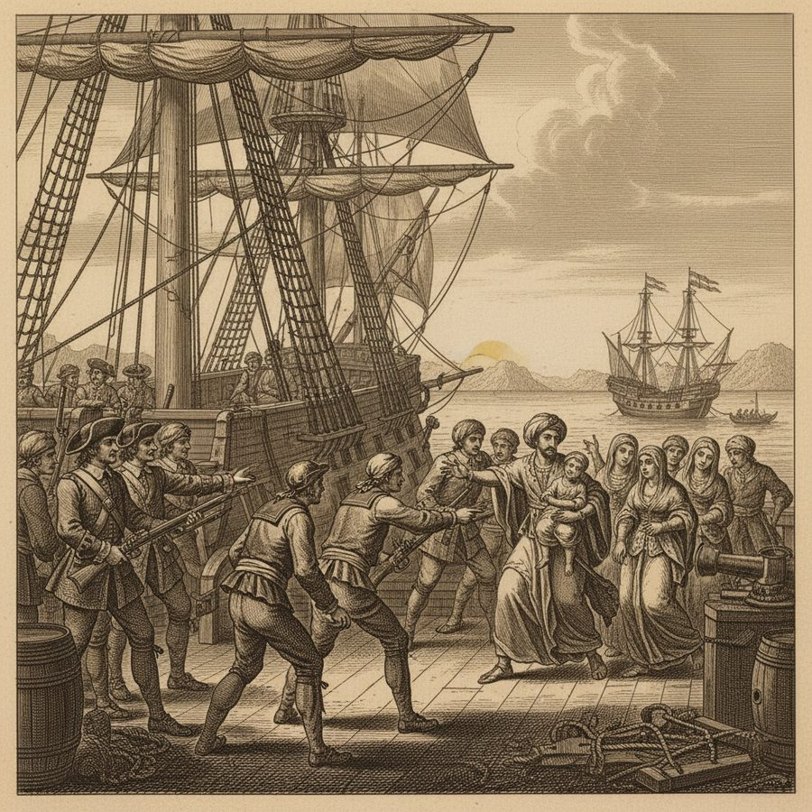
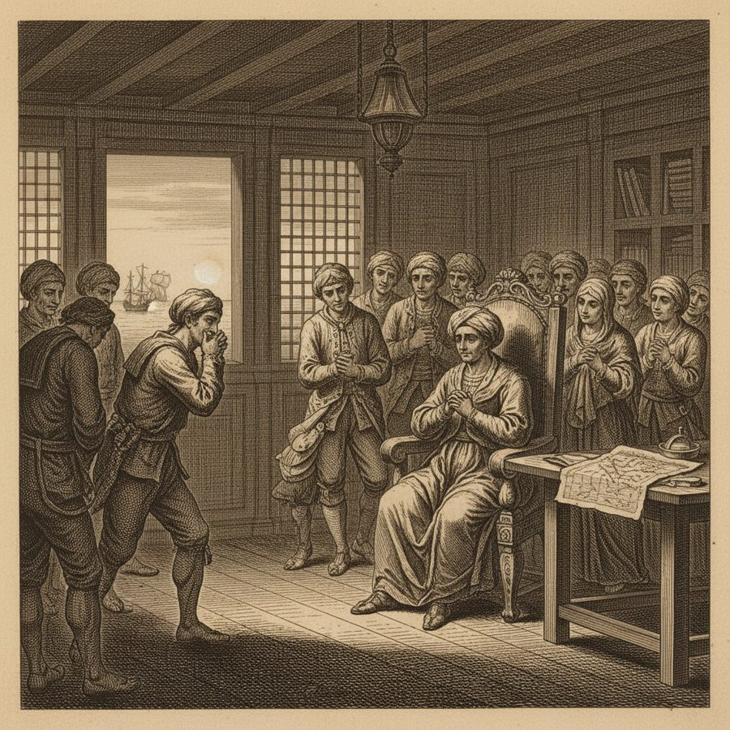
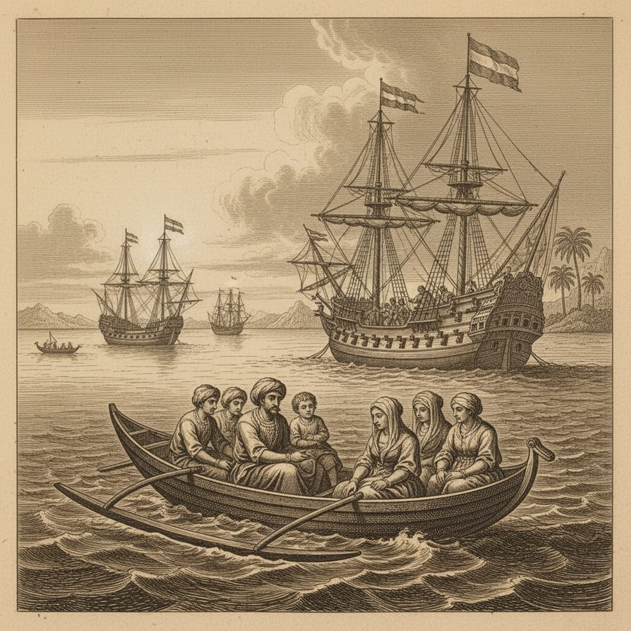
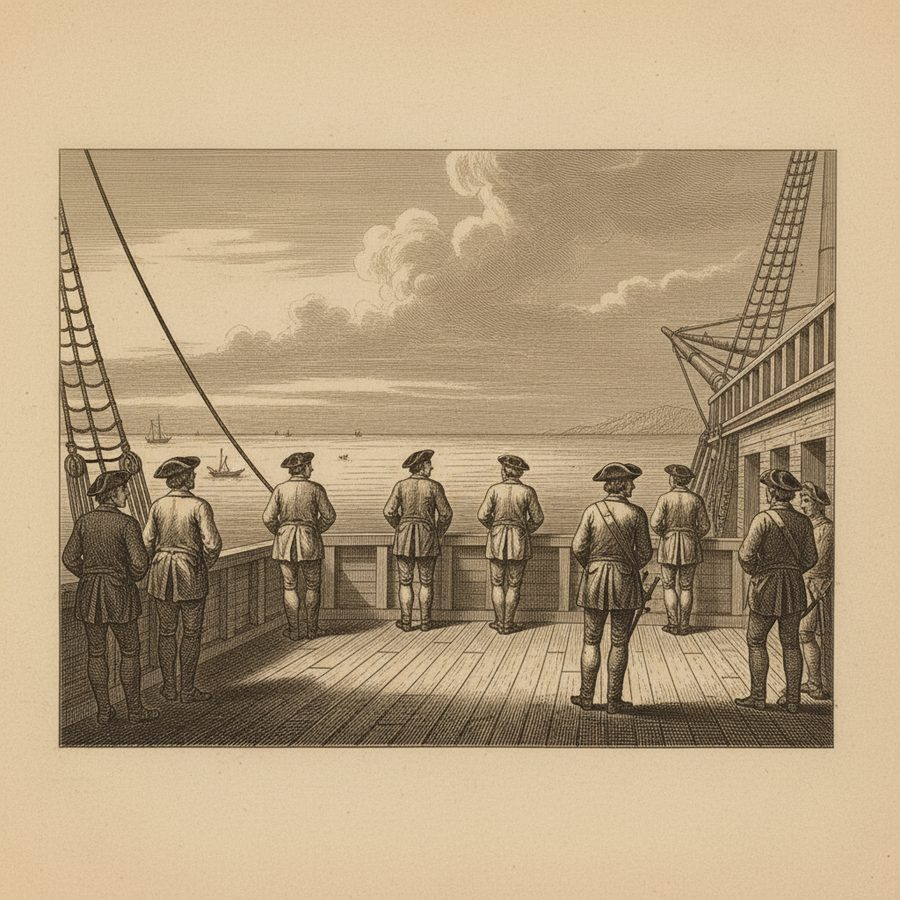

The Dethroned King of Madura — 'What Is Pity Without Assistance?'
A deposed island king throws himself on an English ship for protection — and is 'tragically delivered' back to his enemies.
When the Dutch of Batavia dethroned the King of Madura, the island-king fled his punishment and escaped the pursuers sent to destroy or enslave him. He found his way to the shore beneath the English Indiaman the Onslow, and 'in the most moving manner' represented his case to the boatswain, begging to be carried to Captain Congreve. Congreve received him, and the king, his young prince and the women of his family came aboard under English protection. But at break of day the Dutch armed vessel discovered the Madurian prows alongside the Onslow — and saw at once that the English had sheltered the men they had come to take. Noble calls what followed 'one of the most melancholy scenes that, perhaps, has ever been acted in the east, in which is exhibited an instance of Dutch insolence and barbarity on one part, and of English pusillanimity and misconduct on the other.' The Dutch demanded the king; the English crew, moved to pity, were at first willing to shelter him while the sailors armed themselves. The king saw his ruin plain; the people wept and protested their sorrow. He answered them: 'I can plainly see that you pity my misfortunes; but what is pity without assistance? Your pity, when you refuse your aid, but heightens my grief.' At last they were obliged to give him up. The young prince and the women were too sunk and confounded to speak a word as they were taken from the ship — and for many days the crew scarce spoke to one another, 'and, I believe, it made several of the common men serious, who had never been so before.'
Figures: The King of Madura, Captain Congreve, The Sultan of Benjar, the Dutch, the English crew
The story as a comic








Why it stands out
It is the moral heart of the book: a breathlessly told true story of one small king abandoned at sea, and Noble's own blunt verdict naming both Dutch cruelty and English cowardice — an unusually candid piece of 18th-century colonial self-criticism.